Blind test: modifiers
Five first-time users, iPhone size, screen only. The three food testers finished every task; of the two hardware testers, one finished and one got stuck at the start. Below: where they got stuck, and the change that would have helped. Findings are numbered 1–35. Green = fixed or not a bug; orange = not done yet. Tap a picture to open it. Your yes or no is at the bottom.
Stuck in more than one test
12 of 3: the menu and Settings have no words
☰ top-left and the gear in the menu are icons only. Both guessed.
Fix: the gear reads “Settings”; ☰ and the gear get a name for screen readers.
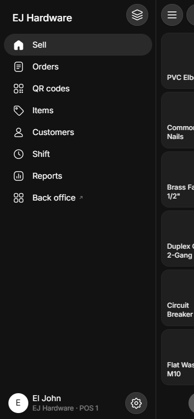
22 of 3: a page with only Back felt unsaved
Add choice has only ←. The item’s Sweetness switches look kept, but a reload drops them until the item’s Save.
Fix: Back keeps the change on every sub-page, and the item page shows “Not saved yet” beside Save.
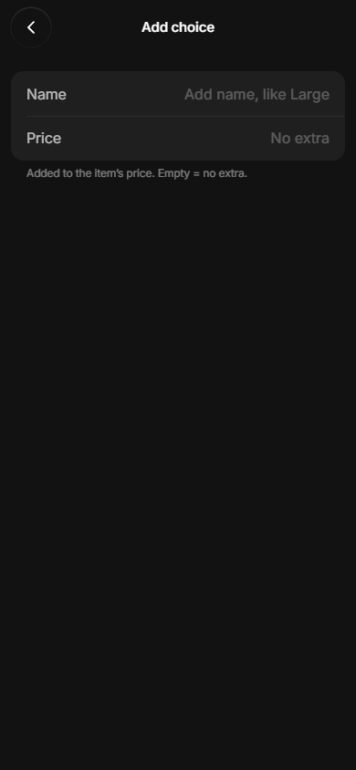
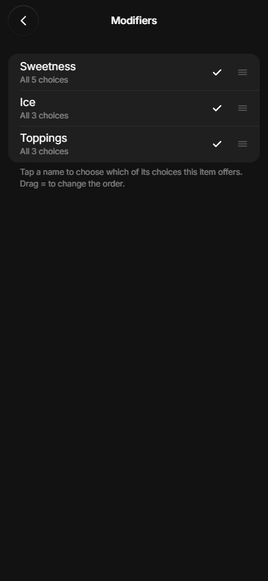
32 of 3: a turned-off choice doesn’t say where or why
Tester 2 couldn’t find which drinks hide 0% a week later. Tester 3 tapped greyed Pearls and nothing happened.
Fix: the Sweetness row says “0% hidden on 1 item”; tapping an out choice says “Pearls is out”.
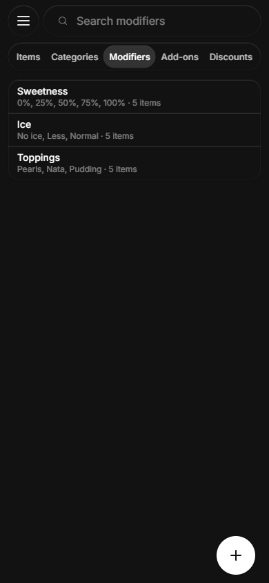
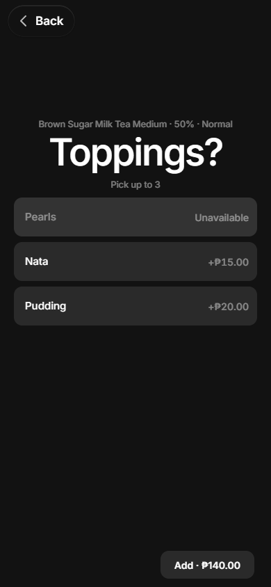
Tester 1 · milk tea shop, new “Cup” question
Make Cup (Regular / Tumbler +₱10), sell a Large with answers, change 25% in the cart, pay cash
Finished all 4. Cart ₱185 = 160 + 15 + 10, right. Receipt shows Sweetness 25%.
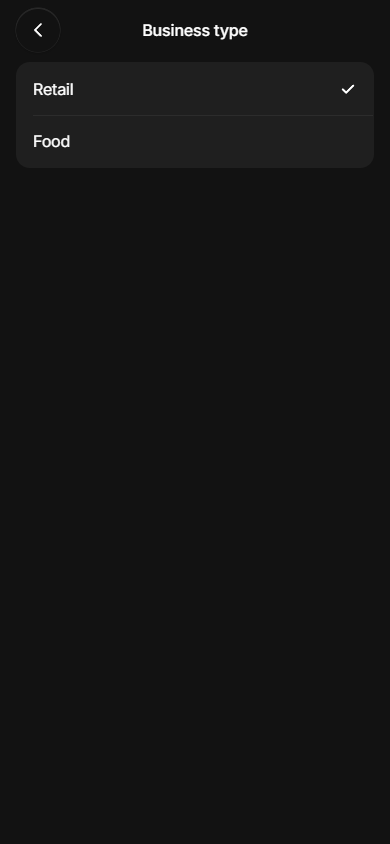
Expected Business type near the top of Settings.
Happened Below Appearance and Printing, off screen.
Fix: a new store is asked “What do you sell?” on first open.
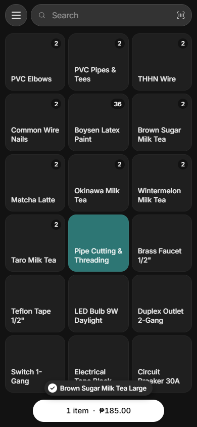
Expected A food shop sees food only.
Happened 30+ hardware samples (Cement, PVC Elbows) stayed next to the teas.
Fix: picking Food hides the hardware samples.

Expected Nothing lit up until tapped.
Happened “Pipe Cutting & Threading” lit from the start.
Fix: no tile lit on open.
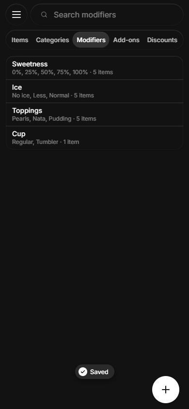
Expected The price in the list.
Happened “Regular, Tumbler”, no +₱10.
Fixed: the list reads “Regular, Tumbler +₱10.00”.
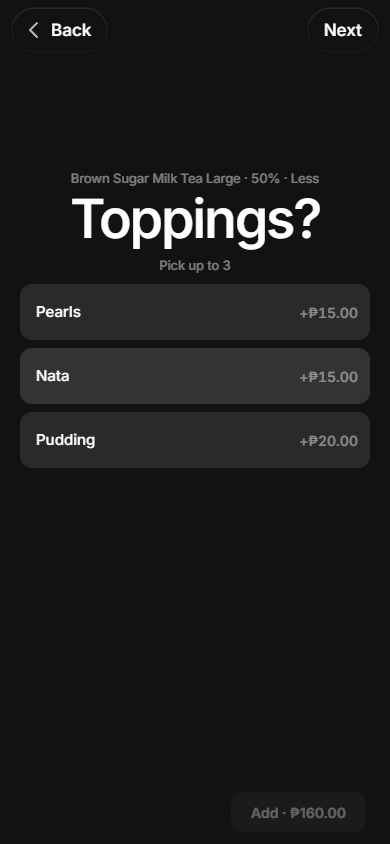
Expected A clear next step on every question.
Happened Pick one jumps on the tap; Toppings needs Next. Couldn’t tell which.
Fix: a small “Pick 1, goes on by itself” under single-pick titles.
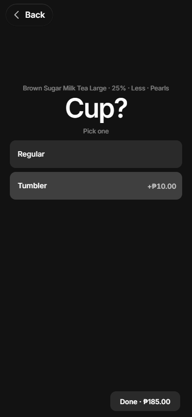
Expected One Done.
Happened “Done · ₱185.00” on the question, “Done” on the line.
Fixed: the question’s button reads “Done” too.
Tester 2 · hide 0% on one drink
Hide 0% on Brown Sugar only, check two drinks, a week later find it and bring it back
Finished all 3. Matcha kept 0%, Brown Sugar didn’t, once the item was saved.

Expected “Hide on one item” where Sweetness is set up.
Happened Only Available / Unavailable, which is every item. Backed out.
Fix: under Status, “Every item. To hide on one item, open the item.”

Expected The item says it can hide choices.
Happened “Sweetness, Ice +1”, no sign of a hidden one.
Fix: the item’s row reads “Sweetness (4 of 5), Ice +1”.
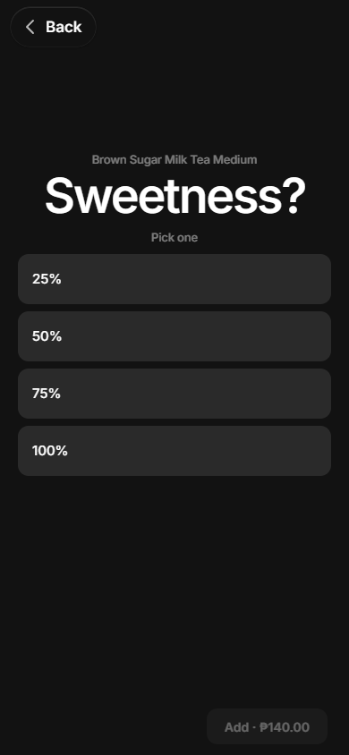
Expected Sell follows the switch.
Happened 0% still sold until the item’s Save (same cause as “felt unsaved” above).
Fix: same as above.
Tester 3 · out of Pearls, discount, refund, report
Pearls out from Sell, put back, two drinks with 10% off one, refund one, top topping
Finished all 6. Answer to the last: Nata, 1 (the refund took Pearls and Pudding off).
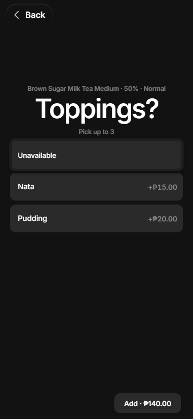
Expected The menu names the topping.
Happened “Unavailable” covered the Pearls row. No word on how long.
Fixed: the menu opens beside the row, so the name stays in sight. The toast wording is not done yet.
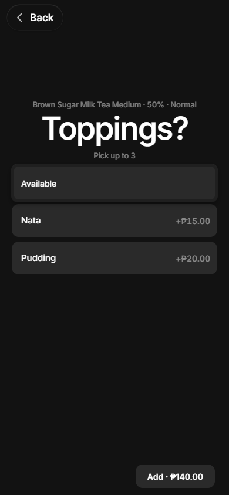
Expected The same menu every time.
Happened It flips to “Available”; nearly undid it.
Fix: the words name the next step: “Mark out” / “Back in stock”.
Expected Tap 1, 0, Apply.
Happened The 0 key is under Clear discount / Apply. Had to scroll.
Fixed: the keypad sits fully above the footer on a phone.
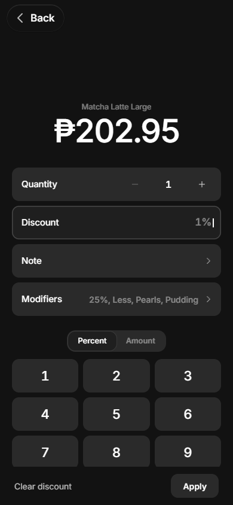
Expected Typing 10 works.
Happened Keyboard digits ignored; stayed 1%.
Fixed: keyboard digits and Enter go into the keypad.
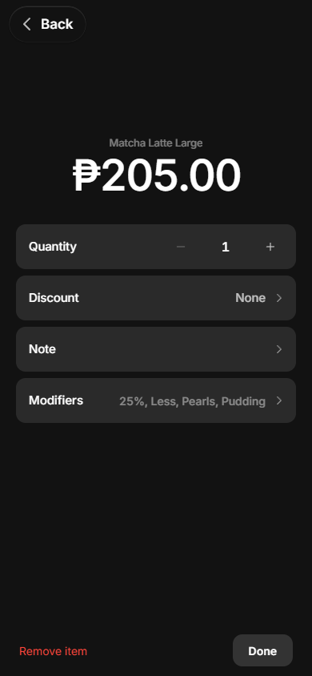
Expected Apply keeps the discount.
Happened At 0% it closed with Discount: None, no word.
Fixed: Apply is greyed at 0%.
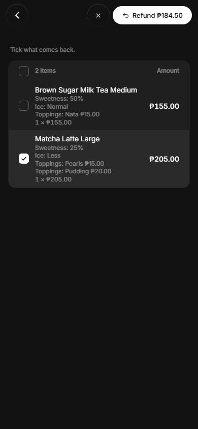
Expected The drink at what was paid, ₱184.50.
Happened The list says ₱205.00, the button ₱184.50.
Fixed: the tick list shows the paid amount, ₱184.50.
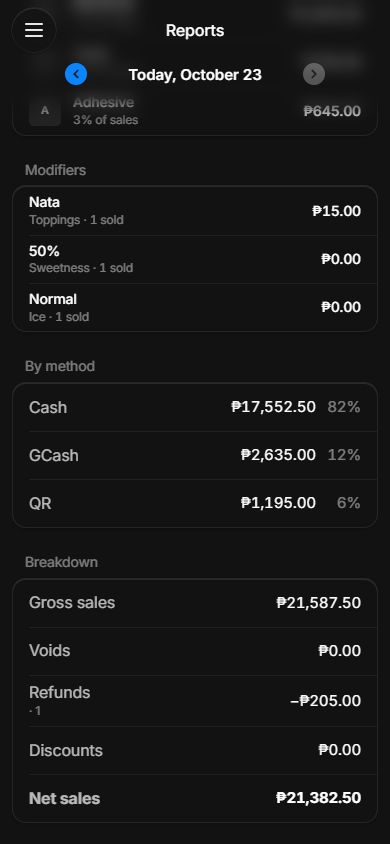
Expected Every topping with a count.
Happened Six screens down, one top choice per modifier, ties hidden, no tap-through.
Not a bug: it lists every choice; only one drink was left after the refund.
Bugs the food testers found
- Money: refunded ₱184.50, but Reports shows Refunds −₱205.00 and Discounts ₱0.00 (the sale had −₱20.50). Tester 3.
- Item › Modifiers › Sweetness switches are lost on reload until the item’s Save, and Sell still offers 0% until then. Tester 2.
- Discount keypad: 0 key under the footer; keyboard digits ignored; Apply at 0% clears quietly. Tester 3.
- Business type Food keeps the hardware samples on Sell and Items. Tester 1.
- “Pipe Cutting & Threading” tile lit on open. Tester 1.
- Modifiers list hides choice prices (“Regular, Tumbler”). Tester 1.
- Two labels for one Done (“Done · ₱185.00” and “Done”). Tester 1.
- Reports › Modifiers: one top choice per modifier, ties hidden, no tap-through. Tester 3.
- The hold menu covers the choice’s name. Tester 3.
- ☰ and the gear have no name. Testers 1 and 2.
Worked
- Make a modifier, add choices with prices, put it on one item.
- Answers in order, prices add up right (₱185), Add shows the total.
- Change answers from the cart line; the receipt follows.
- Hide 0% on one drink; other drinks keep it.
- Pearls out from Sell, can’t be picked, back in.
- Refund one drink of two, at the paid amount.
Not the app
- Tester 1’s browser failed to start once (an old profile), and a Cash tap by name timed out in its script; a tap on the spot worked.
Tester h1 · hardware store, “Cut?” on PVC pipe
Make Cut? (No cut / Cut in half / Custom cut +₱20), sell 2 custom + 1 no cut, change one to half, pay cash
Finished all 4. Cart ₱455 = 145 + 145 + 165. Receipt: one line per pipe, each with its own cut.
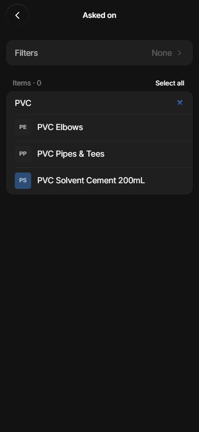
Expected Put “Cut?” on the pipe only.
Happened Asked on lists whole items. “PVC Pipes & Tees” holds both the pipe and the tee; no way to pick just the pipe. Left PVC Elbows off, unsure.
Fix: Asked on lists each kind (Pipe 1/2 x 3m, Tee 1/2), so a question can go on one. Your call, question 1.
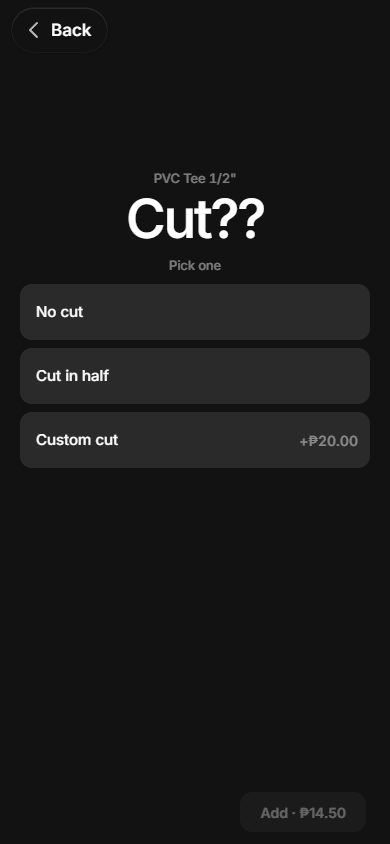
Expected A tee isn’t cut, so no question.
Happened Tapping Tee 1/2 asks “Cut??” too.
Fix: same as above.
Expected The title reads “Cut?”, as typed.
Happened It reads “Cut??”.
Fixed: no second “?” when the name already ends in one, on Sell and the receipt.
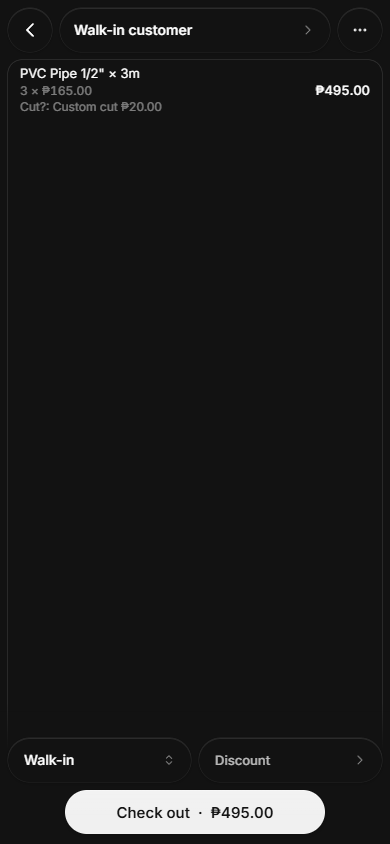
Expected Not sure the cart would stay.
Happened The cart stayed after a reload with no sign. Added the pipes again: 3 cut pipes, ₱495, not 2.
Fix: on reopen, a short “Cart still open · 3 items”. Question 11.
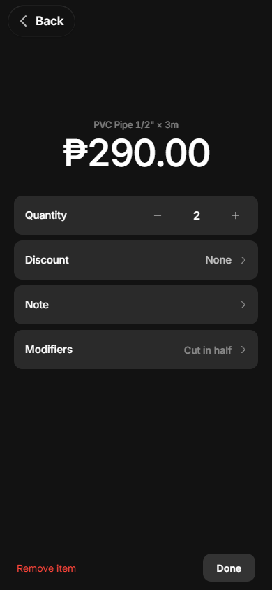
Expected Change one pipe’s cut, leave the other.
Happened “2 × ₱165 Cut?: Custom cut” → Cut in half changed both, ₱290.
Fix: changing a line of 2 asks “Just one or both?”; Just one splits the line. Question 2.
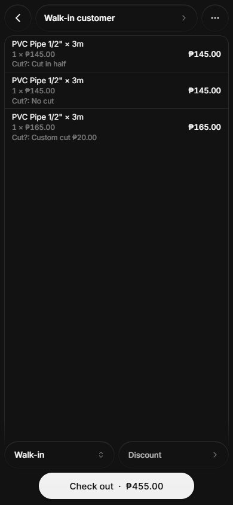
Expected A simple “one of these is now Cut in half”.
Happened Set the line to 1, changed it, re-added a Custom cut. Works, many taps.
Fix: same as above.
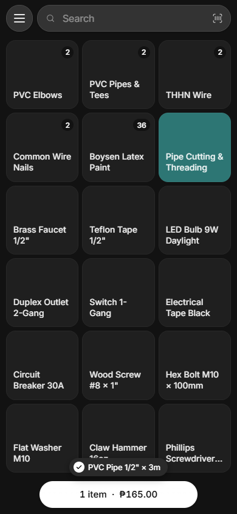
Expected A plain tile.
Happened “Pipe Cutting & Threading” lit teal all session. Selected? Stuck? Same as Tester 1.
Fix: no tile lit on open (not done yet).
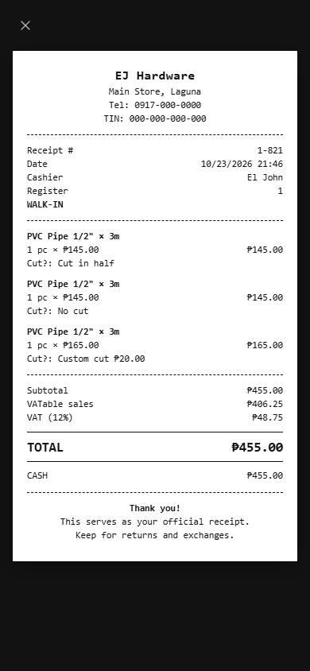
Expected Each pipe’s cut is clear.
Happened Three lines, each with its own cut, so yes. “Cut?:” reads oddly; no pipe numbers.
Fixed: the receipt reads “Cut: Custom cut”.
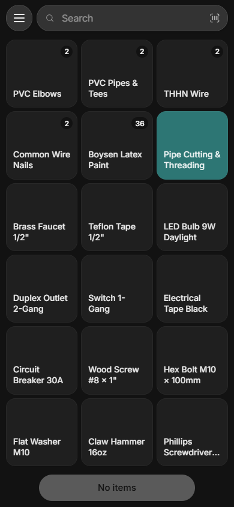
Expected Show receipt stays reachable.
Happened After a reload, Sell was back and Show receipt was gone. Didn’t try Orders.
No fix: none needed: Orders keeps every sale with its receipt.
Tester h2 · hardware store, “Assembly” on big items
Make Assembly (No / Assemble +₱150) on 2–3 big items, hide it on one, sell, refund, count Assemble
Stuck at step 1: couldn’t find where items or modifiers are set up, so steps 2–5 weren’t tried.
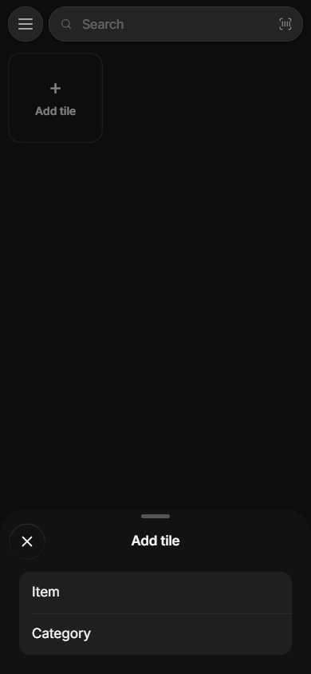
Expected Somewhere to set up Assembly from Items or Settings.
Happened Items showed only “My page” with + Add tile. Settings has no Items or Modifiers.
Fix: on a phone, Sell and Items open on All items, so Items › Modifiers is in sight (Tester h1 got there this way). Question 3.
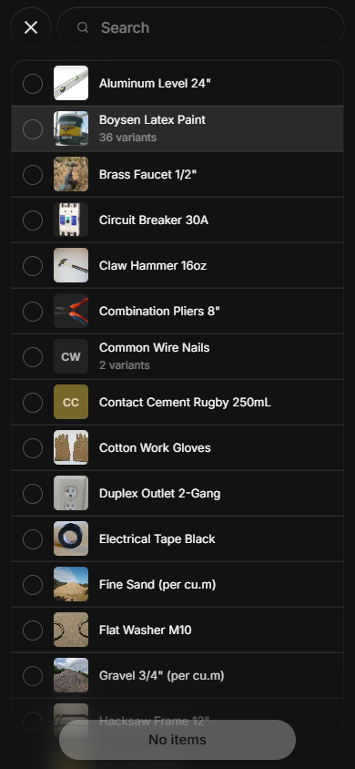
Expected Pick an item, then edit it, or make a new one.
Happened The picker only places a tile. “wheelbarrow”: No items, no way to make one.
Fix: holding an item offers Edit item (below). Question 4.
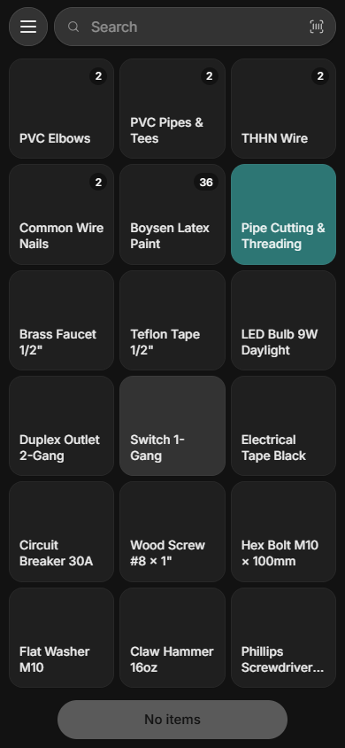
Expected A wheelbarrow, cabinet or ladder.
Happened 18 small tiles. ladder, wheel, cab, tool, shelf: nothing. Closest: Aluminum Level 24″.
No fix: none in the app: the demo store has no big items. The next test names one.
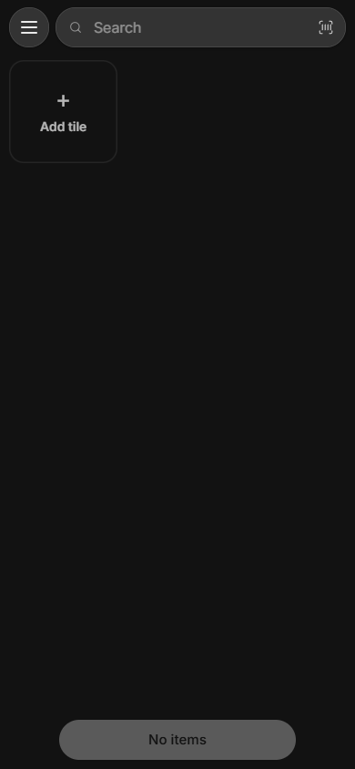
Expected A switch between All items and My page.
Happened Only ☰ and Search. The switch sits off screen; Sell showed an empty My page until flipped with code.
Fix: the switch is in sight on a phone, and Sell opens on All items. Question 3.
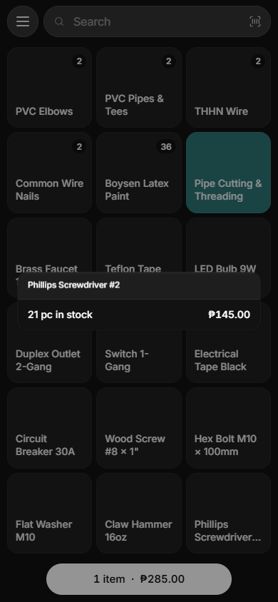
Expected Edit or Modifiers on hold.
Happened A card with name, stock, price. No edit.
Fix: the hold card gets Edit item. Question 4.
Expected Back office opens.
Happened A new tab with 404 Not Found (/pos-lab/backoffice.html).
Fix: the link goes to the real back office.
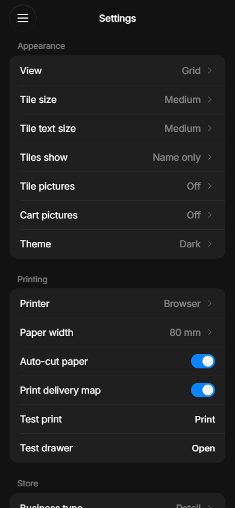
Expected Hardware store.
Happened Business type says Retail, header says EJ Hardware.
No fix: no change: Retail is the hardware store’s type (there are Retail and Food only).
Bugs the hardware testers found
- Title says “Cut??” for a question named “Cut?”. Tester h1. Fixed.
- A question on an item asks on every kind of it (Tee asks Cut). Tester h1.
- Changing a line of 2 changes both; no way to change one. Tester h1.
- Cart kept after a reload with no sign. Tester h1.
- “Pipe Cutting & Threading” lit all session. Testers h1 and 1.
- Menu › Back office opens a 404. Tester h2.
- The All items / My page switch is off screen on a phone; Sell and Items look empty on My page. Tester h2.
- A tap in Add tile › Item put Claw Hammer in the cart. Tester h2.
Fixed since the food test
7 checked, 5 changed
“Was there before” = the bug was already in the app before modifiers.
- Refund in Reports: not a bug. Refunds counts the full ₱205 and gives the ₱20.50 discount back; Net ₱155 is the drink kept. A check now guards it. Was there before.
- Refund tick list shows what Refund gives back (₱184.50), not the list price. Was there before.
- Discount keypad: the 0 key sits above the footer, keyboard digits and Enter work, Apply is greyed at 0. The 0 under the footer came with modifiers; keyboard and Apply at 0 were there before.
- The hold menu opens from the row’s right end, so the choice name stays visible. New with modifiers.
- Reports › Modifiers: not a bug. It lists every choice; Tester 3 had one drink left after the refund. New with modifiers.
- Modifier rows show prices: “Pearls +₱15.00, Nata +₱15.00”. New with modifiers.
- Changing a cart line’s answers says “Done”, not “Done · ₱205.00”. New with modifiers.
Your yes or no
12 questions, most important first
Green = my pick. Smaller ones left out: a “Pick 1, goes on by itself” hint, “Cut:” instead of “Cut?:” on the receipt, more items on Sell.
- Should you be able to put a question on just one kind of an item, so the pipe asks “Cut?” and the tee doesn’t?Yes. A tee can’t be cut. · h1 (h2’s task needs it too)
- When the customer changes one of 2 pipes on a line, should the POS ask “Just one or both?”Yes. Saves the re-add workaround. · h1
- On a phone, should Sell and Items always open on All items, with the My page switch in sight?Yes. Empty My page looked broken. · h2
- Should holding an item on Sell offer “Edit item”?Yes. Owner looked there first. · h2
- Should an item’s choice switches save at once, instead of waiting for the item’s Save?Yes. Two testers lost changes. · t1, t2
- Should a Food store hide the hardware demo items?Yes. 30+ pipes beside the teas. · t1
- Should the ☰ and gear buttons show a word next to them?Yes. 2 of 3 had to guess. · t1, t2
- Should a new store be asked “What do you sell?” the first time it opens?Yes. Business type was hard to find. · t1, h2
- Should a turned-off choice say where it is off, like “0% hidden on 1 item”?Yes. Couldn’t find it a week later. · t2
- When a topping is out, should tapping it say “Pearls is out”, with the menu saying “Mark out” or “Back in stock”?Yes. Tap did nothing; nearly undid it. · t3
- When the POS reopens with items still in the cart, should it say “Cart still open”?Yes. Pipes got added twice. · h1
- On Breakdown, should a refunded drink that had a discount count what was paid back (₱184.50) instead of its full price (₱205)?No. The settled rule already nets right. · t3